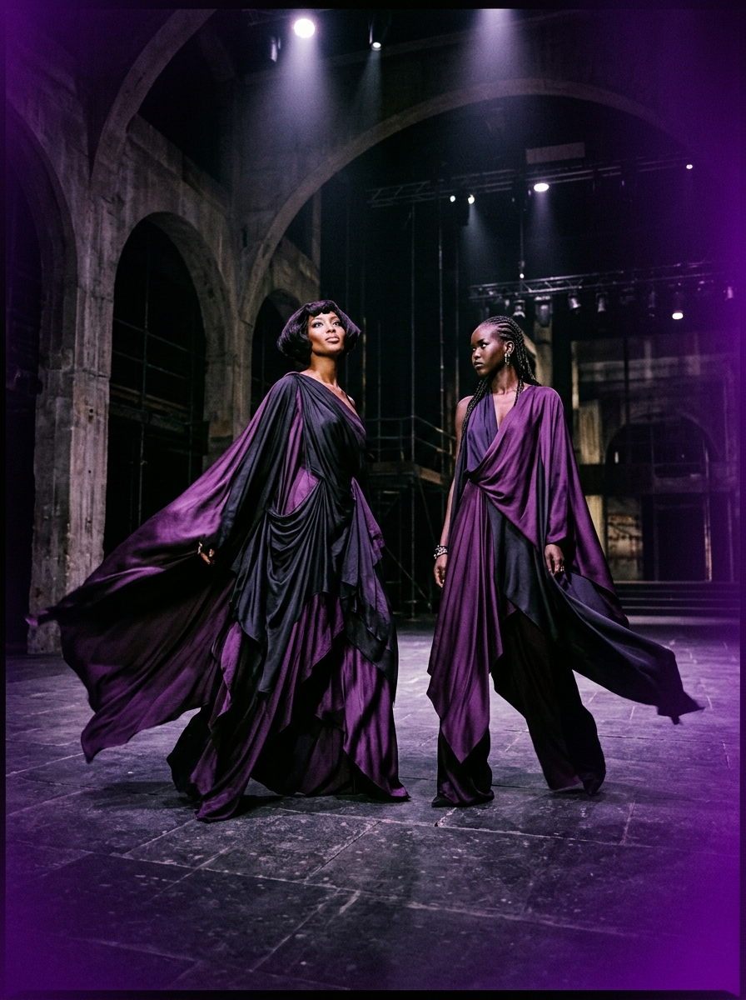

Pillar 01
Emotion First
"We design for internal resonance over external expectation. Every silhouette begins as an emotional frequency before it becomes a garment."
Clothing doesn't just cover the body — it speaks the mood underneath it.
DIGA was founded on a singular conviction: conventional e-commerce treats clothing as passive commodity, while human emotion is active, fluid, and ever-shifting.
We reject seasonal trends in favor of mood signatures. Rather than forcing individuals into rigid style boxes, our garments are engineered as kinetic mediums—designed to billow, drape, and resonate with your inner state.
"We design for internal resonance over external expectation. Every silhouette begins as an emotional frequency before it becomes a garment."
"High-density kinetic silks, bias-cut structural seams, and Milanese atelier standards. Precision engineering built to respond to physical movement."
"Self-expression is not static. Your wardrobe should shift atmosphere as dynamically as your inner frequency."
